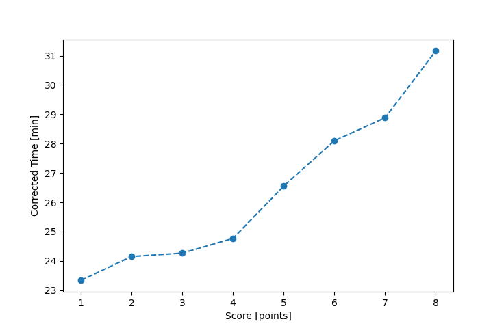

| Wind: | 2-3 (BFT) |
|---|---|
| RC: | Ken_B , Maryjane_B |
| Date: | July 31, 2016 |
| Notes: | M2 Delayed start T-storms |
| Rank / Score | Name | Boat | Input Time [mm:ss] | Input Offset [mm:ss] | Race Time [mm:ss] | Race Time [s] | Handicap | Corrected Time [s] | Corrected Time [mm:ss] |
|---|---|---|---|---|---|---|---|---|---|
| 1.0 | Chris_E | SF | 26:18 | 00:00 | 26:18 | 1578 | 1.00400 | 1572 | 26:12 |
| 2.0 | Art_M | SWSX | 25:19 | 00:00 | 25:19 | 1519 | 0.95900 | 1584 | 26:24 |
| 3.0 | Mike_F | SF | 26:38 | 00:00 | 26:38 | 1598 | 1.00400 | 1592 | 26:32 |
| 4.0 | Barry_O | HLR14 | 29:47 | 00:00 | 29:47 | 1787 | 1.11700 | 1600 | 26:40 |
| 5.0 | David_Bu | SF | 28:37 | 00:00 | 28:37 | 1717 | 1.00400 | 1710 | 28:30 |
| 6.0 | Bill_P | SF | 29:36 | 00:00 | 29:36 | 1776 | 1.00400 | 1769 | 29:29 |
| 7.0 | Lewis_V | BCN | 26:23 | 00:00 | 26:23 | 1583 | 0.87000 | 1820 | 30:20 |
| 8.0 | Nedra_F | SF | 30:53 | 00:00 | 30:53 | 1853 | 1.00400 | 1846 | 30:46 |
| 9.0 | Gail_B | SWSX | 35:22 | 00:00 | 35:22 | 2122 | 0.95900 | 2213 | 36:53 |

Application Notes:
All race results are unofficial
View source code at https://github.com/cessnao3/portsmouthracecalc/